12 Transformers
Transformers represent one of the most important developments in deep learning. They are based on a processing concept called attention, which allows a network to give different weights to different inputs, with weighting coefficients that themselves depend on the input values, thereby capturing powerful inductive biases related to sequential and other forms of data.
These models are known as transformers because they transform a set of vectors in some representation space into a corresponding set of vectors, having the same dimensionality, in some new space. The goal of the transformation is that the new space will have a richer internal representation that is better suited to solving downstream tasks. Inputs to a transformer can take the form of unstructured sets of vectors, ordered sequences, or more general representations, giving transformers broad applicability.
Transformers were originally introduced in the context of natural language processing (NLP), and have greatly surpassed the previous state-of-the-art approaches based on recurrent neural networks (RNNs). Transformers have subsequently been found to achieve excellent results in many other domains. For example, vision transformers (ViT) often outperform CNNs in image processing tasks, whereas multimodal transformers that combine multiple types of data, such as text, images, audio, and video, are amongst the most powerful deep learning models.
One major advantage of transformers is that transfer learning is very effective, so that a transformer model can be trained on a large body of data and then the trained model can be applied to many downstream tasks using some form of fine-tuning. A large-scale model that can subsequently be adapted to solve multiple different tasks is known as a foundation model. Furthermore, transformers can be trained in a self- supervised way using unlabelled data, which is especially effective with language models since transformers can exploit vast quantities of text available from the internet and other sources. The scaling hypothesis asserts that simply by increasing the scale of the model, as measured by the number of learnable parameters, and training on a commensurately large data set, significant improvements in performance can be achieved, even with no architectural changes. Moreover, the transformer is especially well suited to massively parallel processing hardware such as graphical processing units, or GPUs, allowing exceptionally large neural network language models having of the order of a trillion (1012 ) parameters to be trained in reasonable time. Such models have extraordinary capabilities and show clear indications of emergent properties that have been described as the early signs of artificial general intelligence.
The architecture of a transformer can seem complex, or even daunting, to a newcomer as it involves multiple different components working together, in which the various design choices can seem arbitrary. In this chapter we therefore aim to give a comprehensive step-by-step introduction to all the key ideas behind transformers and to provide clear intuition to motivate the design of the various elements. We first describe the transformer architecture and then focus on natural language processing, before exploring other application domains.
12.1 Attention
attention was originally developed as an enhancement to RNNs for machine translation, however Vaswani et al. (2017) later showed that "attention is all you need", i.e. significantly improved performance could be obtained by eliminating the recurrence structure and instead focusing exclusively on the attention mechanism. Today, transformers based on attention have completely superseded RNNs in almost all applications.
We will motivate the use of attention using natural language as an example, although it has much broader applicability. Consider the word "bank" in the following sentence: I swam across the river to get to the other bank.
the word ‘bank’ can mean different things, However, this can be detected only by looking at the context provided by other words in the sequence. We also see that some words are more important than others in determining the interpretation of ‘bank’. We see that to determine the appropriate interpretation of ‘bank’, a neural network processing such a sentence should attend to specific words from the rest of the sequence.
- its exact meaning should be determined from the context, i.e. other words in the same sentence.
- different words have different importance in determining its meaning,
- the words that we should attend to can be anywhere in the sentence.
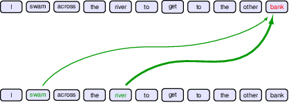
Figure 12.1 Schematic illustration of attention in which the interpretation of the word ‘bank’ is influenced by the words ‘river’ and ‘swam’, with the thickness of each line being indicative of the strength of its influenceMoreover, we also see that the particular locations that should receive more attention depend on the input sequence itself: in the first sentence it is the second and fifth words that are important whereas in the second sentence it is the eighth word. In a standard neural network, different inputs will influence the output to different extents according to the values of the weights that multiply those inputs. Once the network is trained, however, those weights, and their associated inputs, are fixed. By contrast, attention uses weighting factors whose values depend on the specific input data. Figure 12.2 shows the attention weights from a section of a transformer network trained on natural language.
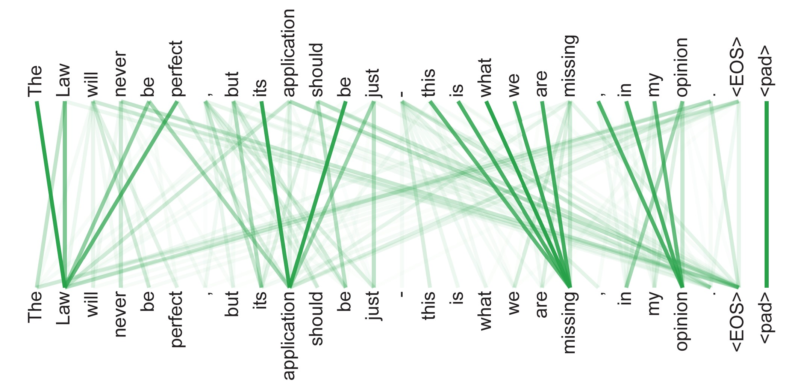
Figure 12.2 An example of learned attention weights. [From Vaswani et al. (2017) with permission.] The law will never be perfect, but its application should be just, this is what we are missing, in my opinion.
In natural language processing (NLP) we need to embed words into vectors, and these vectors can then be used as inputs for subsequent neural network processing. These embeddings capture elementary semantic properties, for example by mapping words with similar meanings to nearby locations in the embedding space. However such embeddings are one-to-one and deterministic, a given word always maps to the same embedding vector. A transformer can be viewed as a richer form of embedding in which a given vector is mapped to a location that depends on the other vectors in the sequence. Thus, the vector representing ‘bank’ in our example above could map to different places in a new embedding space for the two different sentences. For example, in the first sentence the transformed representation might put ‘bank’ close to ‘water’ in the embedding space, whereas in the second sentence the transformed representation might put it close to ‘money’.
12.1.1 Transformer processing
the structure of the data matrix, of dimension NxD. It’s kept unchange through the transformer layers.
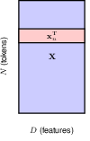
the input and output have the same dimension, this, coupled with residual networks, is what makes really deep networks possible.
12.1.2 Attention coefficients
\[ \mathbf{y}_n = \sum_{m=1}^{N} a_{nm} \mathbf{x}_m \]
in the attention layer, each output is a weighted sum of all the input.
attention can be understood in many different ways, a similarity kernel is most useful.
in this sense, we can think of it as a combination of NN and GP.
12.1.3 Self-attention
\[ a_{nm} = \frac{\exp(\mathbf{x}_n^T \mathbf{x}_m)}{\sum_{m'=1}^{N} \exp(\mathbf{x}_n^T \mathbf{x}_{m'})} \]
the weights are calculated as the exponential of the dot product between pairs of inputs.
\[ \mathbf{Y} = \text{Softmax}[\mathbf{X} \mathbf{X}^T] \mathbf{X} \]
no mask, to fully understand the connections in language.
12.1.4 Network parameters
As it stands, the transformation from input vectors {xn } to output vectors {yn } is fixed and has no capacity to learn from data because it has no adjustable parameters. Furthermore, each of the feature values within a token vector xn plays an equal role in determining the attention coefficients, whereas we would like the network to have the flexibility to focus more on some features than others when determining token similarity.
We therefore transform the three input matrices, each with its our transformation, and consequently trainable parameters. The transformed input matrices are named query, key, and value respectively.
\[ \begin{aligned} \mathbf{Q} &= \mathbf{X}\mathbf{W}^{(q)} \\ \mathbf{K} &= \mathbf{X}\mathbf{W}^{(k)} \\ \mathbf{V} &= \mathbf{X}\mathbf{W}^{(v)} \end{aligned} \]
and the attention layer is accordingly updated to be \[ \mathbf{Y} = \text{Softmax}(\mathbf{Q}\mathbf{K}^T) \mathbf{V} \]
determining the attention coefficients Q, K, and output Y
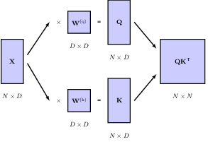 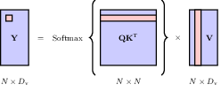
12.1.5 Scaled self-attention
the fact that values do not go through the scaling in worth noting.
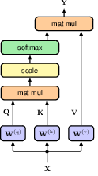 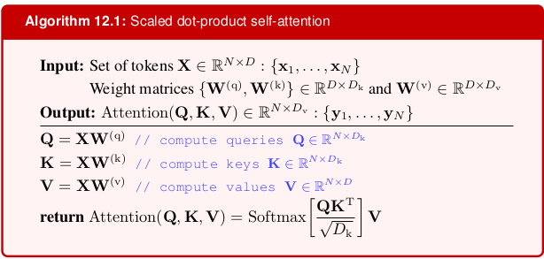
12.1.6 Multi-head attention
in multi-head attention, the weight matrix dimension of the feedfoward layer increases accordings, however the output is kept the same dimension as the input. This is done by adjusting the input and output dimensions of the feed forward layers
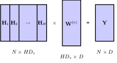
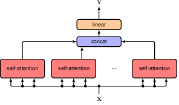 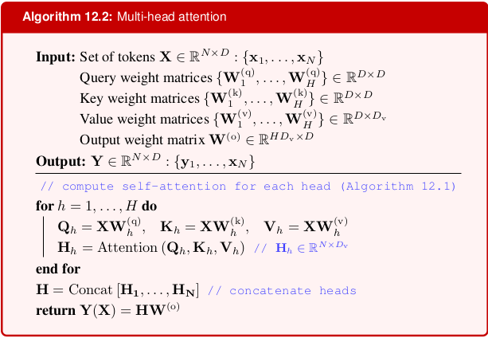
12.1.7 Transformer layers
residual connection and layer normalisation are added to the multi-head attention
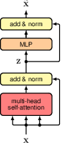
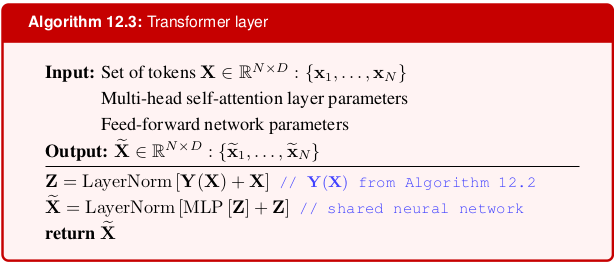
12.1.8 Computational complexity
12.1.9 Positional encoding
Positional encoding injects information about the relative or absolute position of the tokens in a sequence. This is crucial for transformers to capture the order of the sequence, as they do not inherently possess any notion of order due to their attention mechanism.
By adding positional encodings to the input embeddings, transformers can leverage the position information to better understand the structure of the data.
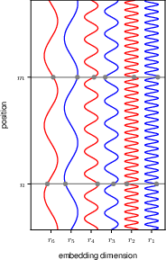 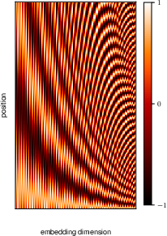
12.2 Natural language
Now that we have studied the architecture of the transformer, we will explore how this can be used to process language data consisting of words, sentences, and paragraphs. Although this is the modality that transformers were originally developed to operate on, they have proved to be a very general class of models and have become the state-of-the-art for most input data types. Later in this chapter we will look at their use in other domains.
Many languages, including English, comprise a series of words separated by white space, along with punctuation symbols, and therefore represent an example of sequential data. For the moment we will focus on the words, and we will return to punctuation later.
The first challenge is to convert the words into a numerical representation that is suitable for use as the input to a deep neural network. One simple approach is to define a fixed dictionary of words and then introduce vectors of length equal to the size of the dictionary along with a ‘one hot’ representation for each word, in which the kth word in the dictionary is encoded with a vector having a 1 in position k and 0 in all other positions.
An obvious problem with a one-hot representation is that a realistic dictionary might have several hundred thousand entries leading to vectors of very high dimensionality. Also, it does not capture any similarities or relationships that might exist between words. Both issues can be addressed by mapping the words into a lower-dimensional space through a process called word embedding in which each word is represented as a dense vector in a space of typically a few hundred dimensions.
12.2.1 Word embedding
CBOW (continuous bag of words) and skip-gram approach for word embedding
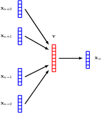 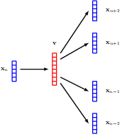
12.2.2 Tokenisation
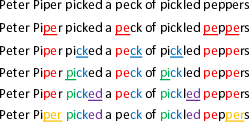
SentencePiece
12.2.3 Bag of words
12.2.4 Autoregressive models
12.2.5 Recurrent neural networks
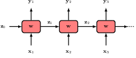 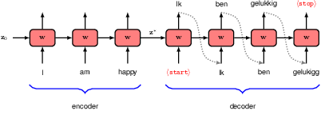
12.2.6 Backpropagation through time
12.3 Transformer language models
The transformer processing layer is a highly flexible component for building powerful neural network models with broad applicability. In this section we explore the application of transformers to natural language. This has given rise to the development of massive neural networks known as large language models (LLMs), which have proven to be exceptionally capable (Zhao et al., 2023).
Transformers can be applied to many different kinds of language processing task, and can be grouped into three categories according to the form of the input and output data. In a problem such as sentiment analysis, we take a sequence of words as input and provide a single variable representing the sentiment of the text, for example happy or sad, as output. Here a transformer is acting as an encoder of the sequence. Other problems might take a single vector as input and generate a word sequence as output, for example if we wish to generate a text caption given an input image. In such cases the transformer functions as a decoder, generating a sequence as output. Finally, in sequence-to-sequence processing tasks, both the input and the output comprise a sequence of words, for example if our goal is to translate from one language to another. In this case, transformers are used in both encoder and decoder roles. We discuss each of these classes of language model in turn, using illustrative examples of model architectures.
12.3.1 Decoder transformers
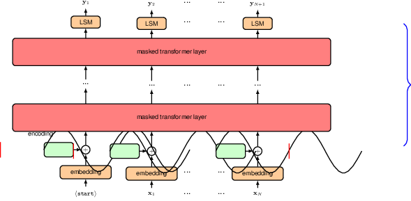 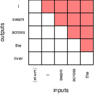
12.3.2 Sampling strategies
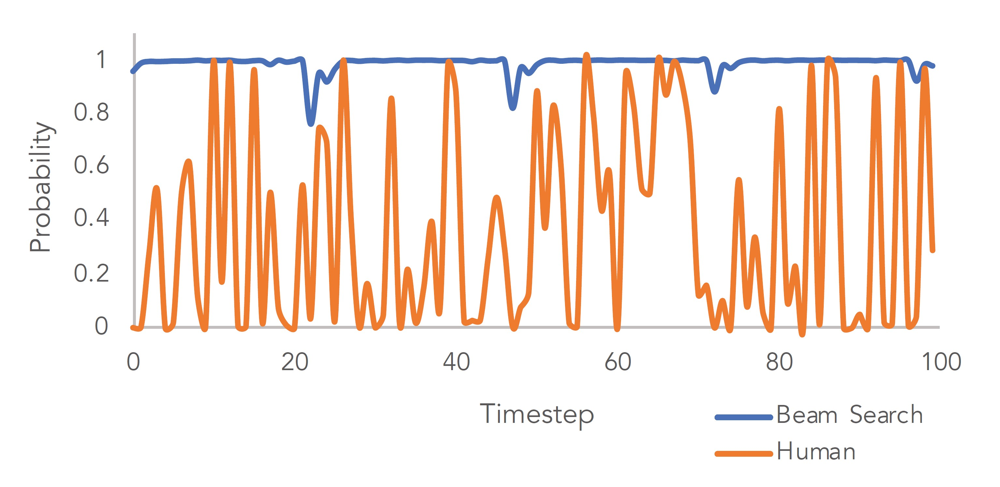
12.3.3 Encoder transformers
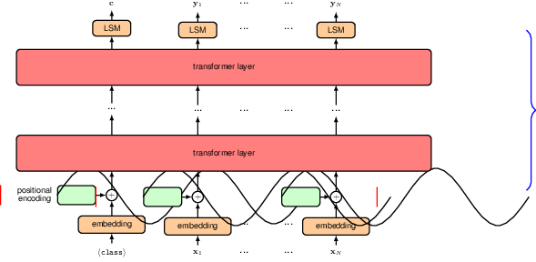
12.3.4 Seq2seq transformers
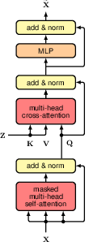 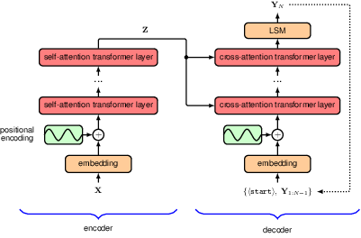
12.3.5 Large language models
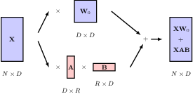
12.4 Multimodal transformers
Although transformers were initially developed as an alternative to recurrent networks for processing sequential language data, they have become prevalent in nearly all areas of deep learning. They have proved to be general-purpose models, as they make very few assumptions about the input data, in contrast, for example, to convolutional networks, which make strong assumptions about equivariances and locality. Due to their generality, transformers have become the state-of-the-art for many different modalities, including text, image, video, point cloud, and audio data, and have been used for both discriminative and generative applications within each of these domains. The core architecture of the transformer layer has remained relatively constant, both over time and across applications. Therefore, the key innovations that enabled the use of transformers in areas other than natural language have largely focused on the representation and encoding of the inputs and outputs.
One big advantage of a single architecture that is capable of processing many different kinds of data is that it makes multimodal computation relatively straightforward. In this context, multimodal refers to applications that combine two or more different types of data, either in the inputs or outputs or both. For example, we may wish to generate an image from a text prompt or design a robot that can combine information from multiple sensors such as cameras, radar, and microphones. The important thing to note is that if we can tokenize the inputs and decode the output tokens, then it is likely that we can use a transformer.
For the input, as long as we can encode and align the inputs from different modalities, we can simply dump them all to the transformer. However, if the output is multimodal, we need to specify which output nodes correspond to which output.
12.4.1 Vision transformers
Illustration of the vision transformer architecture for a classification task. Here a learnable hclassi token is included as an additional input, and the associated output is transformed by a linear layer with a softmax activation, denoted by LSM, to give the final class-vector output c.
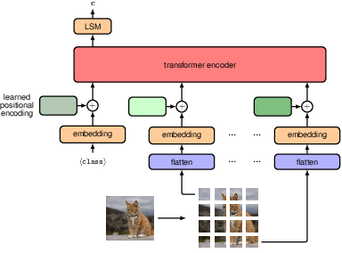
12.4.2 Generative image transformers
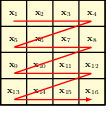
a raster scan that defines a specific linear ordering of the pixels in a two-dimensional image.
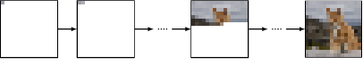
An illustration of how an image can be sampled from an autoregressive model. The first pixel is sampled from the marginal distribution p(x11), the second pixel from the conditional distribution p(x12 |x11 ), and so on in raster scan order until we have a complete image.
12.4.3 Audio data
An example mel spectrogram of a humpback whale song.
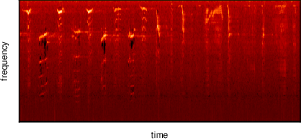
12.4.4 Text-to-speech
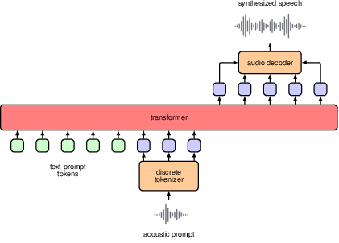 VALL-E
12.4.5 Vision and language transformers
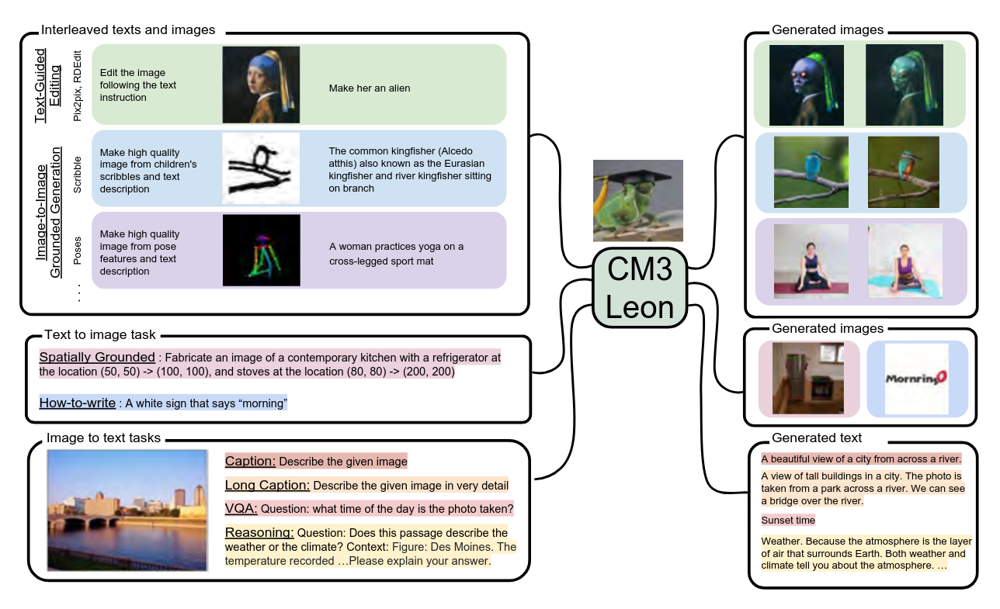